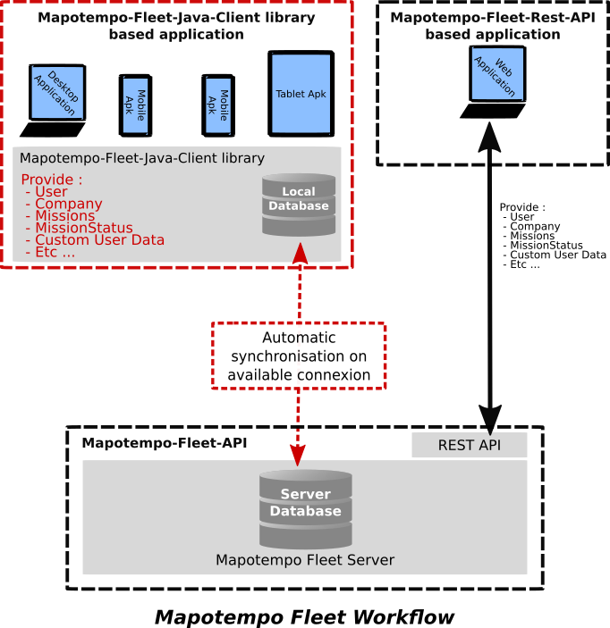

The Mapotempo-Fleet-Java-Client is designed to synchronised create and update Mapotempo's Missions beetween a server database and a local storage. The main problem solved by mapotempo-fleet-java-client is the offline managing datas. With this library you can access at mapotempo data into a java application even havn't an available connexion. You can also create, update or delete data offline.
A connexion is represented by {@link com.mapotempo.fleet.api.MapotempoFleetManagerInterface}. You can establish a connexion with the {@link com.mapotempo.fleet.api.ManagerFactory}, this class provide methods to try to get a {@link com.mapotempo.fleet.api.MapotempoFleetManagerInterface}. Instance will be return into the {@link com.mapotempo.fleet.api.MapotempoFleetManagerInterface.OnServerConnexionVerify} callback provide in the method. The first connexion necessity an available connexion with the mapotempo server. This is necessary to synchronise {@link com.mapotempo.fleet.core.model.User} and {@link com.mapotempo.fleet.core.model.Company} models.
MapotempoFleetManagerInterface mMapotempoFleetManager = null;
ManagerFactory.getManager(new JavaContext(), "static", "static", new MapotempoFleetManagerInterface.OnServerConnexionVerify() {
{@literal @Override}
public void connexion(Status status, MapotempoFleetManagerInterface mapotempoFleetManager) {
mapotempoFleetManager = mapotempoFleetManager;
}
});
The {@link com.mapotempo.fleet.core.model.User} and {@link com.mapotempo.fleet.core.model.Company} are return respectively by the getUser() and getCompany() method of {@see com.mapotempo.fleet.api.MapotempoFleetManagerInterface}.
To access at {@link com.mapotempo.fleet.core.model.Mission} you need to get a {@link com.mapotempo.fleet.api.accessor.MissionAccessInterface}. {@link com.mapotempo.fleet.api.MapotempoFleetManagerInterface} return it using the getMissionAccess() method.
To access at {@link com.mapotempo.fleet.core.model.MissionStatusType} you need to get a {@link com.mapotempo.fleet.api.accessor.MissionStatusTypeAccessInterface}. {@link com.mapotempo.fleet.api.MapotempoFleetManagerInterface} return it using the getMissionStatusTypeAccessInterface() method.
When the library detecte an available connexion and the synchronisation is turn on, it will be synchronise his local
database with the mapotempo server database automatically.
Synchronise actions can fail in several case :